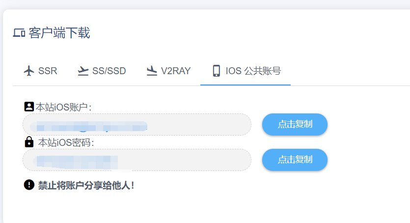
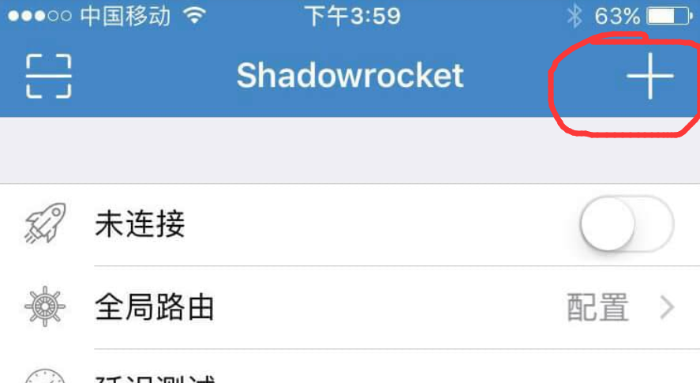
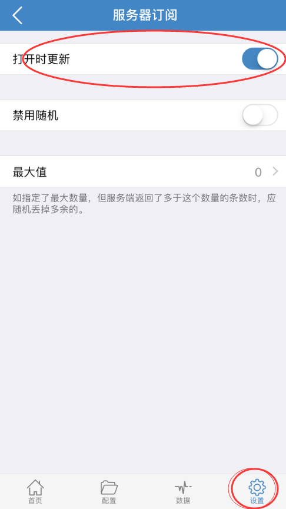
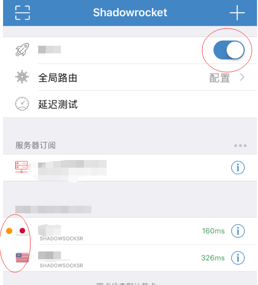

IOS 平台
软件下载
- 登录网站后台，进入用户中心，找到【快速添加节点】
- 依次选择【客户端下载】—【IOS公共账号】，找到公共的App Store 账号和密码。特别注意，请不要将密码分享给他人

- 在您的手机上退出app stroe 账号，登录公共的app store 账号
- 进入搜索页面
- 在搜索框中输入【shadowrocket】，筛选软件，logo如下图

- 点击小火箭后面的云下载图标，将软件下载到手机上（如提示收费370日元请无视，继续下载即可）
- 如果提示收费，请无视，不收你钱！！！
- 请勿登录icloud！！
- 切记下载完成后退出App Store账号！
****
软件配置
配置方式1：复制用户中心单端口订阅地址，网址类型的，然后打开软件，点击右上角加号，类型选择su开头的，URL处粘贴你复制的订阅地址，点完成，然后选择节点连接即可。
- 使用IOS自带的Safari浏览器打开我们的网站https://wmsxwd-a.men或者https://wmsxw999.men (推荐)
- 登录，默认进入用户中心
- 向下滑动，分别点击【快速添加节点】—【V2ray】，进入节点添加界面
- 请确认使用v2ray订阅地址

- 点击复制v2ray订阅链接
- 打开刚刚安装的小火箭
- 点击右上角的-【+】号，然后点击选择类型为【Subscribe】

- 在url中粘贴你上一步复制得到的地址，点击确定，然后静候片刻，会得到一些节点列表
- 点击底下4栏中的 设置->服务器订阅->打开
自动后台更新开关

节点启用
- 选择一个你需要的节点（请优先选择一个国外节点）
- 点击【未连接】后面的按钮，开始使用
GPRS高速上网吧
